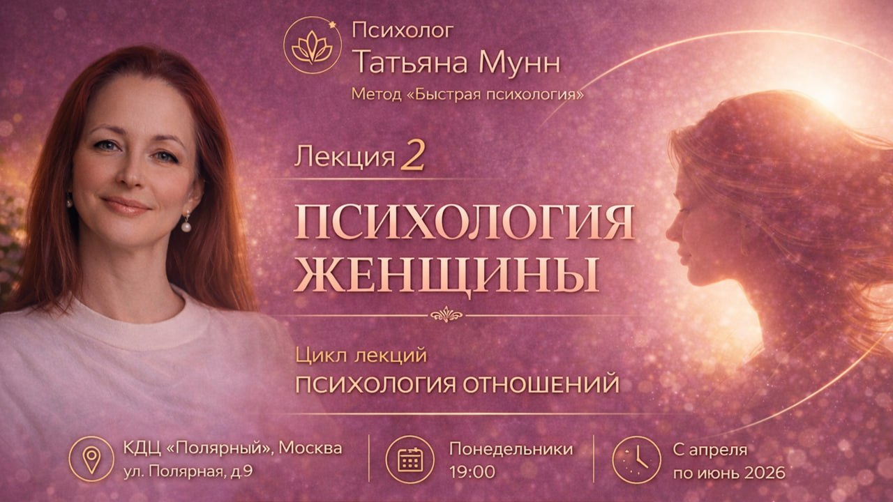
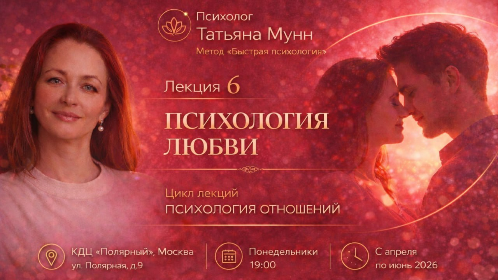
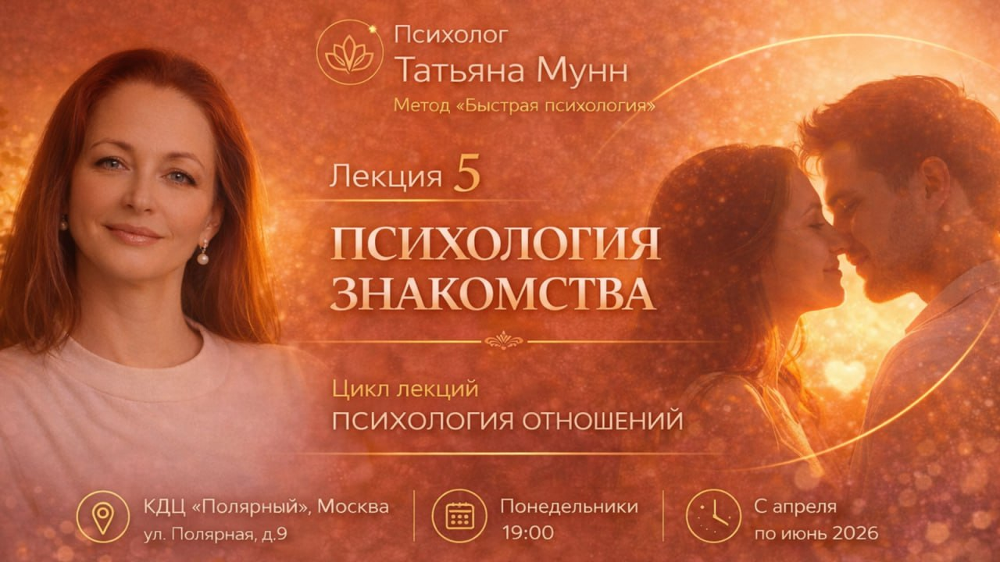
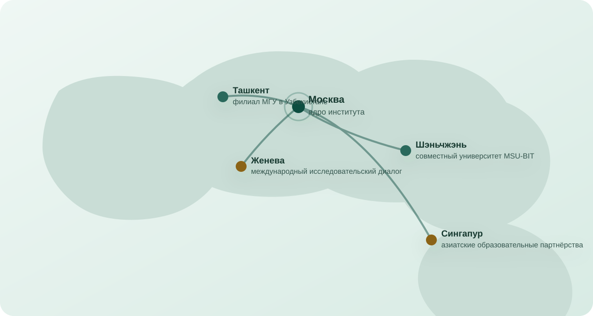

Конференции · 9 апреля 2026
Data Fusion 2026: что обсуждали на конференции о данных и ИИ
Главные темы форума: аналитика, доверие к данным, образовательные программы и новые роли специалистов.
ЧитатьМеждународное медиа о трендах общества: конференциях, образовании, искусственном интеллекте, психологии, спорте и публичной деятельности института.
Новости, конференции, публичные лекции, интервью с экспертами и обзоры событий, которые меняют образовательную и общественную среду.
Подборка материалов о конференциях, открытых лекциях, эмоциональном интеллекте, данных, искусственном интеллекте и международном научном диалоге.
Главные темы форума: аналитика, доверие к данным, образовательные программы и новые роли специалистов.
Читать
Как открытые встречи переводят психологические темы из частной консультации в формат просвещения и дискуссии.
Читать
Разговор о публичной экспертизе, просвещении, психологической культуре и ответственном языке медиа.
Читать
Почему тема эмоциональной грамотности становится частью международной образовательной повестки.
Читать
Лекции помогают говорить о близости, коммуникации и выборе партнёра спокойно, публично и профессионально.
Читать
Короткие обзоры событий и исследований, которые связывают университеты, экспертов и общественные инициативы.
Читать
Директор АНО МИИИИПС и главный редактор медиа-направления. Ведёт темы образования, психологии, искусственного интеллекта, публичных лекций и международных научных событий.
Открыть профиль редакции